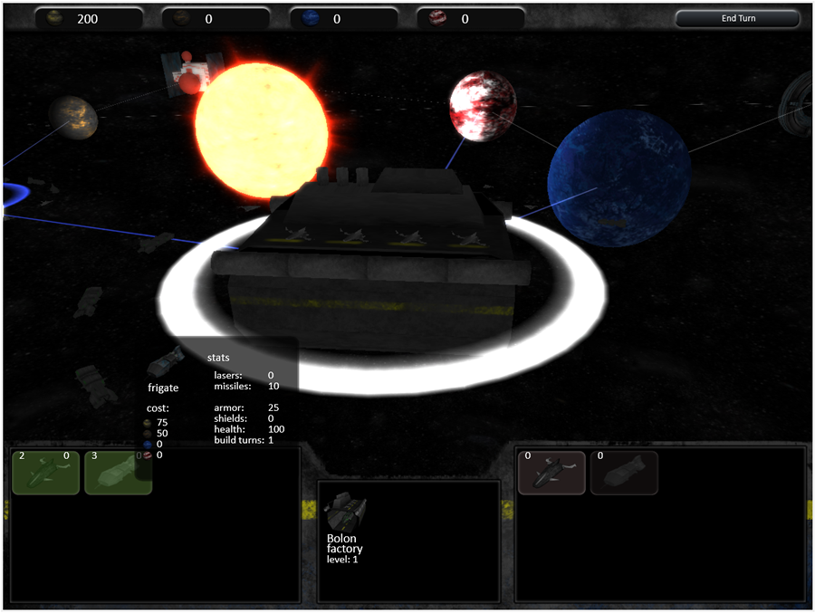
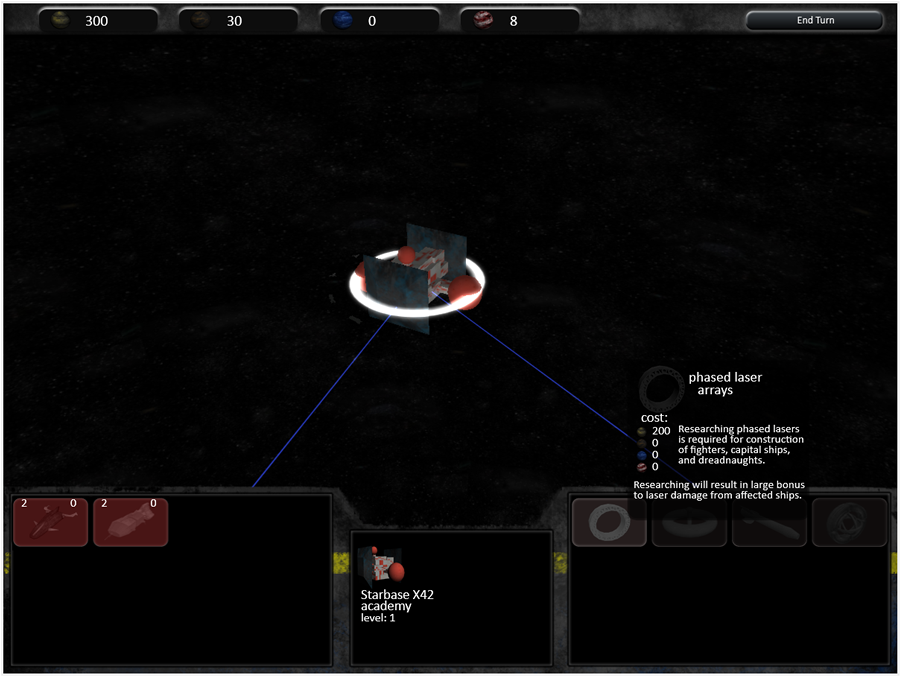

Start game: begin
Group members
Nate Barr
Xixi Luo
Dan Szafir
Tessa Verbruggen
Links
Links to pertinent documentation:
Initial Pitch
Planning Document
Playtest Review
Sourcecode (zip)
Advice to future students
Instructions
Most instructions are explained in game
Controls:
Camera rotate: right click and drag
Camera pan: WASD or center click and drag
Camera zoom: Center mouse wheel
Select planet: left click
Select all ships in stack for transport: left click on ship button
Reduce number of ships in stack by one: right click on ship button
Move/attack: right click on target planet
End turn: space (or click button)
Queue research/ship construction: left click on button
Works in: Firefox 7+, Chrome (some versions)
To run locally in firefox: set about:config security.fileuri.strict_origin_policy=false
Game description
Space Wars is a turn-based strategy game in which you compete against the computer to control the solar system.
Your goal is to control your supplies of four major resources - credits, steel, plasma, and antimatter - and use those supplies
to upgrade your planets, create expansive fleets, and research new technologies. Show your military might by crushing your enemies
and controlling their planets.

Showing factory controls and ship hovering.

Showing academy controls and research buttons.